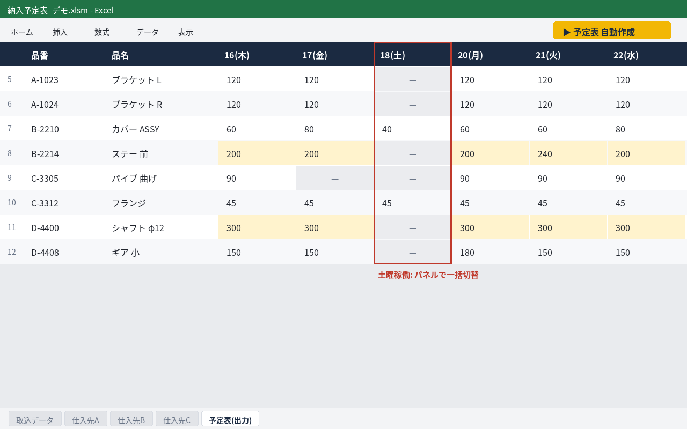
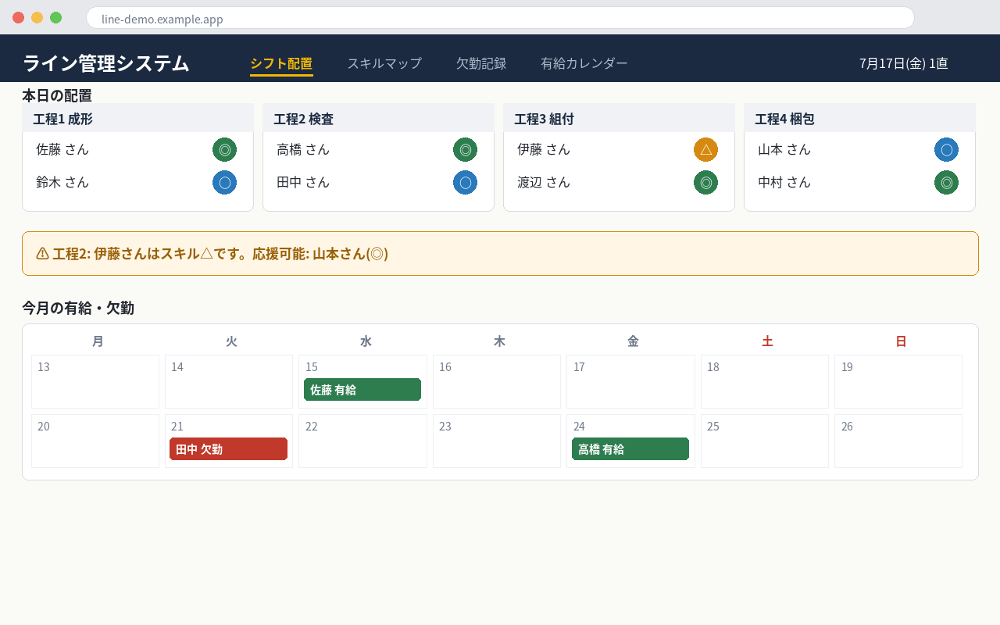
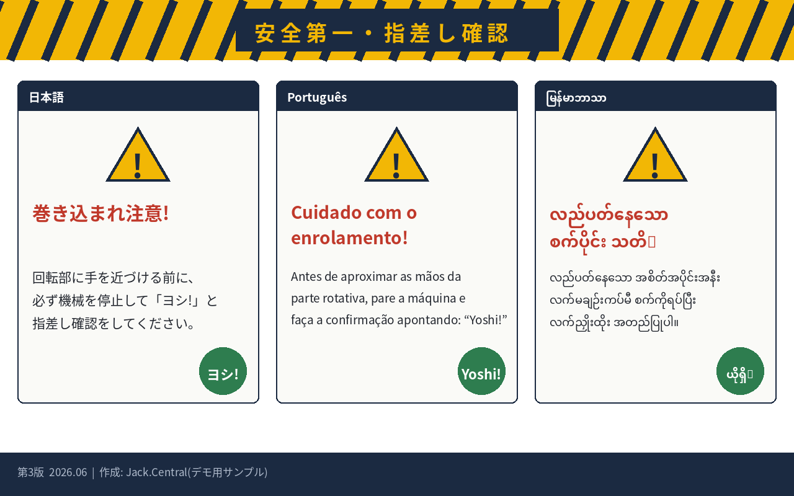

Jack.Centralは、製造ラインの管理を20年務めた元ライン長が運営する業務改善サービスです。Excelマクロ、シフト管理アプリ、多言語の安全教育資料まで。打ち合わせから納品・保守までオンラインで完結します。
ひとつでも当てはまれば、自動化の対象です。
大手のシステム会社は、この規模の仕事を受けません。受けても現場を知らないSEが要件定義から始めるので、高くて遅い。Jack.Centralは自分の現場で使うものを20年作り続けてきたので、話が早いです。
すべて実際の製造現場で運用されてきたものです。画面はデモ用データに差し替えています。
仕入先ごとにバラバラな納入予定を1つの予定表に自動集約。シフトに応じた数式の自動適用、土曜稼働パネルの切替、色分け表示まで自動化。
担当者は「貼り付けてボタンを押す」だけになりました。

人員配置、スキルマップ、欠勤記録、有給カレンダーをブラウザで一元管理。スマホからも確認でき、二段階のパスワードで閲覧権限を分離。
サーバー費用は月0円構成。保守もオンラインで完結します。

現場の安全ポスター・教育資料を、実際の作業内容に即した表現で多言語化(ポルトガル語・ミャンマー語の制作実績あり)。翻訳会社と違い、現場の危険ポイントを理解した上で訳語を選びます。
技能実習生・特定技能の受け入れ現場での運用実績があります。

最初の相談と診断は無料です。合わないと判断されたら、そこで終わって構いません。
| 内容 | 目安 | 例 |
|---|---|---|
| Excelマクロ製作 | 3万円〜 | 転記の自動化、集計表、帳票の自動生成 |
| 業務アプリ製作 | 10万円〜 | シフト管理、設備点検記録、在庫管理 |
| 多言語資料製作 | 1万円〜/点 | 安全教育資料、作業手順書(ポルトガル語・ミャンマー語ほか) |
| 月額保守 | 5,000円〜/月 | 仕様変更、不具合対応、使い方サポート |
※ 正式な金額は無料診断後に確定します。診断後の追加請求はありません。ツールの著作権・改変権は納品後お客様に帰属する形も選べます。
メール1本で始まります。訪問対応の調整も可能です。
「この作業、何とかならないか」という一文だけでも構いません。対象のExcelファイルや作業の様子が分かる資料があれば、より具体的な回答ができます。
返信は原則24時間以内。しつこい営業の連絡は一切しません。診断の結果「自動化しても元が取れない」と判断した場合は、正直にそうお伝えします。
問い合わせフォーム設置後はボタンのリンク先を差し替えてください。